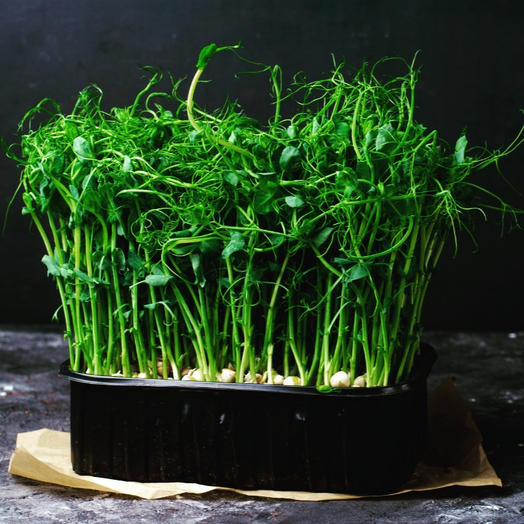

Naša Mikrozelenina

Hrášok
Pikantná chuť pre šaláty a sendviče.

Reďkovka
Ostrá a svieža, plná živín.

Brokolica
Jemná a zdravá pochúťka.
Zdravá mikrozeleninka plná vitality priamo k vám!
Sme lokálny pestovateľ čerstvých microgreens, ktoré prinášajú zdravie a skvelú chuť do vašej kuchyne. Pestujeme ich s dôrazom na kvalitu, čerstvosť a prírodný spôsob pestovania – bez pesticídov a umelých hnojív. Objavte silu prírody v každom súste!
Pikantná chuť pre šaláty a sendviče.
Ostrá a svieža, plná živín.
Jemná a zdravá pochúťka.
V MicroVitality veríme, že zdravie začína na tanieri. Preto sa s láskou venujeme pestovaniu čerstvých, výživných a chutných microgreens – malých rastlín s veľkým množstvom vitamínov, minerálov a antioxidantov. Naša misia je jednoduchá: prinášať čerstvé a kvalitné microgreens priamo k vám, aby ste si mohli dopriať zdravie v každom súste. Pestujeme ich s maximálnou starostlivosťou, bez chemikálií a v dokonale kontrolovaných podmienkach, aby ste mali istotu, že dostávate len to najlepšie. Či už ste nadšenec zdravého životného štýlu, domáci kuchár alebo profesionálny šéfkuchár, naše microgreens dodajú vašim jedlám nielen skvelú chuť, ale aj extra dávku živín. Skúste ich pridať do šalátov, smoothie, sendvičov alebo ako štýlový doplnok na tanier – možnosti sú nekonečné! Ďakujeme, že podporujete lokálne pestovanie a zdravý životný štýl. Ak máte akékoľvek otázky alebo si chcete objednať, neváhajte nás kontaktovať!
Email: mikrobylinkylili@gmail.com
Telefón: +421 904 476 783
Adresa: Voderady